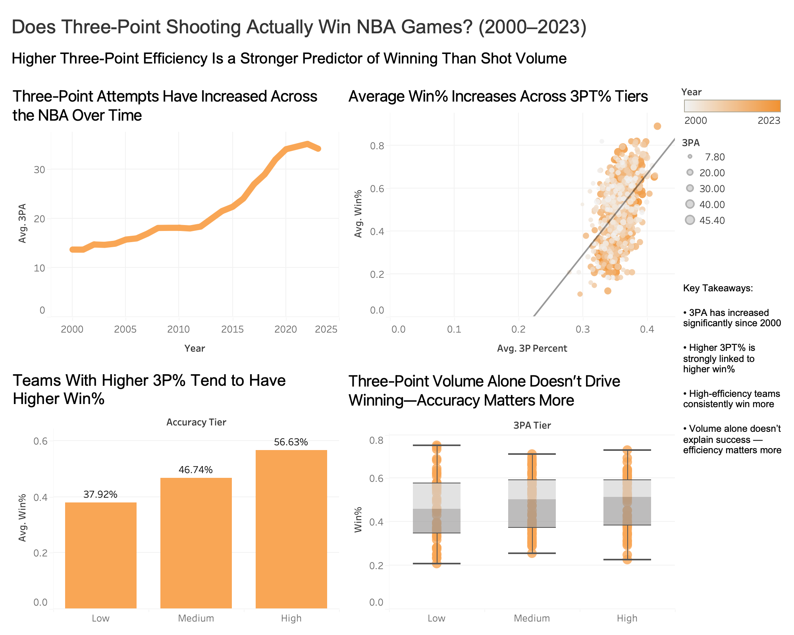

I am a data science student with experience in data analysis, visualization, and cloud computing. My work focuses on using data to understand trends, communicate insights, and support decision-making.
This Tableau dashboard explores how three-point shooting relates to winning in the NBA from 2000 to 2023. The analysis shows that shooting efficiency is a stronger predictor of success than shot volume.
Tools: Tableau, Data Visualization

This project demonstrates a cloud-based data workflow using Amazon S3, AWS Athena, and SageMaker to analyze NYC 311 complaint data and create a modeling dataset.
Tools: AWS S3, Athena, SageMaker, SQL
This project focuses on exploratory data analysis using Python to clean, analyze, and visualize data.
Tools: Python, pandas, matplotlib
Python, pandas, matplotlib, SQL, Tableau, AWS S3, AWS Athena, AWS SageMaker, Git, and GitHub.